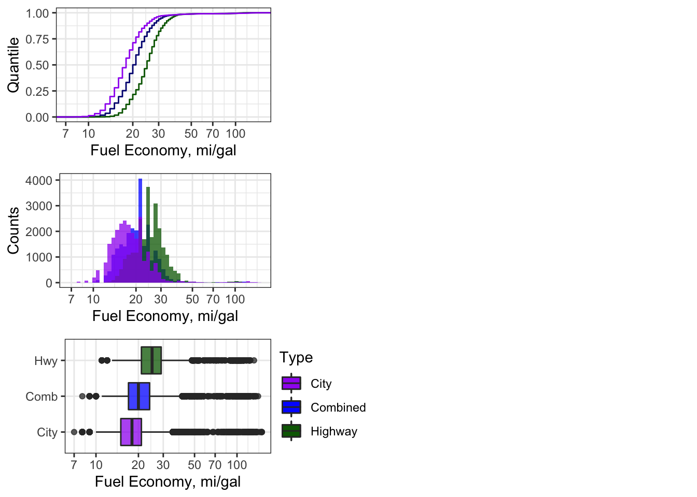

Chapter 7 Multivariate Data Exploration
7.1 Ch. 7 Objectives
After this chapter, you should (know / understand / be able to ):
- Define correlation, causation, and their difference
- Conduct a formal exploratory data analysis on multivariate data using geoms from
ggplot - Create and interpret a scatterplot between two variables
- Create and interpret a Q-Q plot
- Create and interpret directional bias in a Tukey mean difference plot
- Create and extract descriptive statistics and qualitative information from Boxplots
7.2 Bivariate Data
Whereas univariate data analyses are directed at “getting to know” the observations made for a single variable, bivariate (and multivariate) analyses are designed to examine the relationship that may exist between two (or more) variables. Like the Chapter on Univariate data, we will focus first on data exploration - a key step towards “getting to know” your data and one that should always proceed inferential statistics or “making conclusions about your data”.
Bivariate means two variables where the observations are paired (i.e., each time an observation is made we sample a value for both variables so that they are linked by place/time/observation).
7.3 Scatterplot
Undoubtedly, you have seen scatterplots many times before but we will give them a formal treatment here. The scatterplot allows you to assess the strength, direction, and type of relationship between two variables of interest. This can be important for determining factors like:
- Correlation
- Linearity
- Performance (of a measurement) in terms of precision, bias, and dynamic range
Traditionally, a scatterplot shows paired observations of two variables with the dependent variable on the y-axis and the independent variable on the x-axis. Creating a plot in this way means that, before you begin, you must make a judgement call about which variable depends on which. The roots of this terminology/protocol lie in the practice of linear regression and the scientific method, the former of which we will discuss in more detail later. For the purposes of exploratory data analysis, however, it actually doesn’t matter which variable goes on which axis. That said, since we don’t wish to break with tradition, let’s agree to follow the dependent/independent variable guidelines so as not to invoke the wrath of the statistics gods.
Statistics:
- The independent variable (x-axis) is thought to have some influence/control over the dependent variable (y-axis).
Scientific Method:
The experimenter manipulates the control variable (independent, x-axis) and observes the changes in the response variable (dependent, y-axis).
Exploratory Data Analysis:
- We throw two variables onto a plot to investigate their relationship. We make a guess about which one is the independent variable (x-axis) and which one is the dependent variable (y-axis) and we hope that nobody calls us out if we got it wrong.
7.3.1 Causality
All this talk about dependent and independent variables is fundamentally rooted in the practice of causal inference reasoning: the ability to say that “action A” caused “outcome B”. Discovering (and proving) that one thing caused another to happen can be an incredibly powerful event. It leads to the awarding of Nobel Prizes, the creation of new laws and regulations, guilt or innocence in court, the changing and convincing of human minds and behaviors, and simply put: more understanding.
A full treatment of causal inference reasoning is beyond the scope of this course, but we will, from time to time, delve into this topic. The art of data science can be a beautiful and compelling way to demonstrate causality….but most of us need to learn to crawl before we can walk, run, or fly. For now, let’s put aside the pursuit of causation and begin with correlation.
7.3.2 Correlation
The scatterplot is a great way to visualize whether (and, to an extent, how) two variables are correlated.
Correlation: a mutual relationship or connection between two or more things; the process of establishing a relationship or connection between two or more measures.

Figure 7.1: Scatterplot examples showing bivariate data with varying degrees of correlation.
In addition to the strength of the correlation, the sign and form of the correlation can vary, too:
- positive correlation: the dependent variable trends in the same direction as the independent variable
- negative correlation: the dependent variable decreases when the independent variable increases
- linear correlation: the relationship between the two variables can be shown with a straight line
- non-linear correlation: the relationship between the two variables is curvilinear

Figure 7.2: Scatterplot examples showing bivariate data with varying types of correlation.
7.3.3 Correlation \(\neq\) causation
Causation: the process or condition by which one event, a cause, contributes to the occurence of another event, the effect. In this process the cause is partly or wholly responsible for the effect.
Let’s take a closer look at the dangers of mistaking a correlated relationship as causal relationship between two variables. Shown below is a scatterplot that builds off the mpg dataset we first discussed in Chapter 4. Using the mpg dataframe, we will plot the relationship between the number of cylinders in an engine (cyl, the independent variable) and that vehcile’s fuel economy (hwy, the dependent variable).

Figure 7.3: Scatterplot of Engine Displacement vs. Fuel Economy
Looking at this plot, there appears a clear correlation between the number of cylinders in a vehicle and its fuel efficiency A linear fit through these data gives a Pearson correlation coefficient of -0.76: not a perfect relationship but a significant one nonetheless. Does this mean that a causal relationship exists? If so, then we only need to mandate that all future vehicles on the road be built with 4-cylinder engines, if we want more a fuel-efficient fleet! That mandate, of course, would likely produce minimal effect. Just because two variables are correlated doesn’t mean that a change in one will cause a change in the other.
Those who understand internal combustion know that the number of cylinders is a design parameter more related to engine power than engine efficiency (i.e., the number of cylinders helps determine total displacement volume). Indeed, the causal relationship for fuel efficiency, in terms of miles traveled per gallon, is due more directly to engine efficiency, vehicle drag coefficient, and vehicle mass. If you want more fuel-efficient cars and trucks, you need more efficient engines that weigh less. Did you know that in the 1990s and early 2000s nearly all engine blocks were made from cast iron? Today, nearly all of them are made from aluminum. Can you guess why?
Did you know that being a smoker is correlated with having a lighter in your pocket? Furthermore, it can be shown that keeping a lighter in your pocket is correlated with an increased risk of developing heart disease and lung cancer. Does this mean lighters in your pocket cause lung cancer?
7.4 Exploring Multivariate Data
With multivariate data we often consider more than just 2 variables of interest; however, visualizing more than 2 variables in a single plot can be challenging. There are advanced statistical approaches to exploring such data (e.g., multivariate regression, principal components, machine learning, etc.), but these techniques are beyond the scope of this course. Here, I will introduce a few graphical techniques that are useful for multivariate data exploration.
7.4.1 Faceting
One easy way to evaluate two or more variables is to create multiple plots (or facets) through the ggplot2::facet function. This function creates a series of plots, as panels, where each panel represents a different value (or level) of a third variable of interest. For example, let’s create a ggplot2 object from the mtcars data set that explores the relationship between a vehicle’s fuel economy and its weight. First, let’s create a simple bivariate scatterplot of these data (mpg vs. wt) and fit a linear model through the data (note: we haven’t yet discussed modeling but more on that here).
# fit a linear model
g1_model <- lm(mpg ~ wt, data=mtcars)
#create a ggplot2 object
g1 <- ggplot(data = mtcars,
aes(x = wt, y = mpg)) +
geom_point() +
geom_smooth(model = g1_model, method = "lm") +
ylab("Fuel Economy (mi/gal)") +
xlab("Vehicle Weight (x1000 lb)")
g1
Figure 7.4: Scatterplot of fuel economy vs. vehicle weight from the mtcars dataset.
However, looking back at Figure 7.3, we know that the number of cylinders (cyl) is also associated with fuel efficiency. To examine at these three variables together (mpg, wt, and cyl) we can create a scatterplot that is faceted according to the cyl variable. This is relatively easy to do in ggplot2 by adding a facet_grid() layer onto our ggplot object. The key arguments to pass into facet_grid() are:
- Whether we want to facet by rows or columns, and
- The variable being used to create the facets.
In our case, column facets probably make the most sense so we would add code, facet_grid(cols = vars(cyl), to the ggplot2 object as follows:
g1 + facet_grid(cols = vars(cyl),
labeller = label_both) #this code adds names & values to the panel label
Figure 7.5: Scatterplots of fuel economy vs. vehicle weight by number of cylinders in the engine (data from the mtcars dataset).
Interestingly, but perhaps not surprising, we can see that the vehicles with different cylinder numbers tend to have different fuel efficiencies, but even within these facets we still see a relationship between efficiency and vehicle weight.
Here are the same data in a plot that is faceted by rows instead of columns.

Figure 7.6: Scatterplots of fuel economy vs. vehicle weight by number of cylinders in the engine (data from the mtcars dataset).
7.4.2 Coloring
We can also use color to indicate variation in data; this can be useful for introducing a third variable into scatterplots and time series plots. Note: when introducing a color variable into a plot, you must do so through an aesthetic, such as: geom_point(aes(color = cyl))
Let’s recreate Figure 7.4 and highlight the cyl variable using difference colors. The addition of color provides us with the same level of insight as did the facets above.
# instruct R to treat the cyl variable as a factor with discrete levels
# this, in turn, tells ggplot2 to assign discrete colors to each level
mtcars$cyl <- as.factor(mtcars$cyl)
g3 <- ggplot(data = mtcars,
aes(x = wt, y = mpg, color = cyl)) +
geom_point() +
ylab("Fuel Economy (mi/gal)") +
xlab("Vehicle Weight, (x1000 lb)")
g3
Figure 7.7: Vehicle fuel economy vs. weight and colored by number of engine cylinders (data from mtcars)
When using color, be aware that many people are unable to distinguish red from green or blue from yellow. Many options exist to avoid issues from color blindness (e.g., the viridis palette) and websites like color-blindness.com allow you to upload image files as a test against common forms.
Here is an updated version of Figure 7.7 that avoids issues with color blindness and, better yet, differentiates the cyl variable with both colors and symbols.
#"#330099","#CC0066","#FF6633", "#0099CC", "#FF9900","#CC6633", "#33CC99",
ggplot(data = mtcars,
aes(x = wt,
y = mpg,
color = cyl,
shape = cyl)) +
geom_point(size = 2) +
ylab("Fuel Economy (mi/gal)") +
xlab("Vehicle Weight, (x1000 lb)") +
scale_colour_manual(values = c("sandybrown",
"orangered",
"steelblue2")) +
theme_classic()
Figure 7.8: Vehicle fuel economy vs. weight and colored by number of engine cylinders (data from mtcars)
Whenever you use color to differentiate variables, use symbols, too.
7.4.3 Contour Plots
7.4.4 Time-Series Density
7.5 Ch-7 Exercises
7.5.1 In-class: fueleconomy.gov
This in-class exercise is will conduct an exploratory, multivariate data
analysis on vehicle fuel economy. We will begin by downloading a .zip file from fueleconomy.gov. This file contains a
.csv with fuel economy information for nearly every vehicle manufactured
between 1984 and today. We will use the readr and dplyr packages to load
and clean the data, respectively. A data dictionary (something that defines
and explains each variable in the data set) is also available at the website
above.
The first code chunk will download the fueleconomy.gov data directly from their
website and into a temp file using download.file() from base R. We will then
unzip() that temp file into a .csv and use readr to read that .csv into a
data frame named raw_data.
#create a temp file to hold the zipped data
temp <- tempfile()
#download the file into temp file
download.file(url = "https://www.fueleconomy.gov/feg/epadata/vehicles.csv.zip",
destfile = temp,
mode="wb")
temp2 <- unzip(temp, "vehicles.csv", exdir = "./data/") #unzip .csv to /data dir
raw_data <- read_csv(temp2) #read the csv into a data frame
unlink(temp) #delete the temp file
rm(temp, temp2) #remove the two temp objects from local environmentLooking at the raw_data data frame, we see there are 83 variables with over
42,000 observations. That’s a LOT of vehicles! In most analyses of large data
sets, we don’t need to inspect every variable. Let’s create a vector of
variables (vars_needed) that we do want and then pass that vector to dplyr::select() to retain only the variables we want. To pass a character
vector as an argument to dplyr::select(), we use the all_of()
function - a <tidy-select> argument modifier. You can type
?tidyr_tidy_select to learn more.
vars_needed <- c("id",
"make",
"model",
"year",
"cylinders",
"displ",
"drive",
"trany",
"VClass",
"fuelType1",
"comb08",
"highway08",
"city08",
"co2TailpipeGpm"
)
df_mpg<-raw_data %>%
dplyr::select(all_of(vars_needed))
#all_of tells dplyr::select to expect a character vector of column names
rm(raw_data) #remove large file from memorySome of these variables can be coded as factors (categorical variables
that may be enumerated into discrete levels). For example, there are a
finite number of vehicle transmission trany or drivetrain drive types on
the market and by telling R to code these data as factors, we can analyze
these variables in categorical form.
First, we will create a vector of variable names that we want to code as
factors, vars_factr. The we will apply the as.factor() function to those
variables using dplyr::mutate(across()). The across() function allows one
to apply the same transformation to multiple columns in a data frame. We will
also take the opportunity to rename a few of these variables (following our
naming guidelines discussed earlier) and to filter the data to retain only
vehciles made after the year 2000.
# ID the columns that we want as class:factor
vars_factr <- c("make", "drive", "trany", "VClass", "fuelType1")
df_mpg %>%
# mutate(across(a)) applies the as.factor function only to the vars of interest
dplyr::mutate(across(all_of(vars_factr), .fns = as.factor)) %>%
#create simpler names
dplyr::rename(fuel_type = fuelType1,
cyl = cylinders,
tran = trany,
v_class = VClass) %>% # easier string to type
# keep only data collected after 2000 for the sake of a millennial audience
dplyr::filter(year >= 2000) -> df_mpg
rm(vars_needed, vars_factr) # won't be needing these anymoreBegin as we always do, by simply looking at some of the data.
## # A tibble: 6 x 14
## id make model year cyl displ drive tran v_class fuel_type comb08
## <dbl> <fct> <chr> <dbl> <dbl> <dbl> <fct> <fct> <fct> <fct> <dbl>
## 1 15589 Acura NSX 2000 6 3 Rear… Auto… Two Se… Premium … 18
## 2 15590 Acura NSX 2000 6 3.2 Rear… Manu… Two Se… Premium … 18
## 3 15591 BMW M Co… 2000 6 3.2 Rear… Manu… Two Se… Premium … 19
## 4 15592 BMW Z3 C… 2000 6 2.8 Rear… Auto… Two Se… Premium … 19
## 5 15593 BMW Z3 C… 2000 6 2.8 Rear… Manu… Two Se… Premium … 19
## 6 15594 BMW Z3 R… 2000 6 2.5 Rear… Auto… Two Se… Premium … 19
## # … with 3 more variables: highway08 <dbl>, city08 <dbl>, co2TailpipeGpm <dbl>Next, let’s take a look at some of the factor levels. There are lots of ways to do this in R.
## [1] "2-Wheel Drive" "4-Wheel Drive"
## [3] "4-Wheel or All-Wheel Drive" "All-Wheel Drive"
## [5] "Front-Wheel Drive" "Part-time 4-Wheel Drive"
## [7] "Rear-Wheel Drive"## [1] "Diesel" "Electricity" "Midgrade Gasoline"
## [4] "Natural Gas" "Premium Gasoline" "Regular Gasoline"## [1] "Compact Cars" "Large Cars"
## [3] "Midsize Cars" "Midsize Station Wagons"
## [5] "Midsize-Large Station Wagons" "Minicompact Cars"
## [7] "Minivan - 2WD" "Minivan - 4WD"
## [9] "Small Pickup Trucks" "Small Pickup Trucks 2WD"
## [11] "Small Pickup Trucks 4WD" "Small Sport Utility Vehicle 2WD"
## [13] "Small Sport Utility Vehicle 4WD" "Small Station Wagons"
## [15] "Special Purpose Vehicle" "Special Purpose Vehicle 2WD"
## [17] "Special Purpose Vehicle 4WD" "Special Purpose Vehicles"
## [19] "Special Purpose Vehicles/2wd" "Special Purpose Vehicles/4wd"
## [21] "Sport Utility Vehicle - 2WD" "Sport Utility Vehicle - 4WD"
## [23] "Standard Pickup Trucks" "Standard Pickup Trucks 2WD"
## [25] "Standard Pickup Trucks 4WD" "Standard Pickup Trucks/2wd"
## [27] "Standard Sport Utility Vehicle 2WD" "Standard Sport Utility Vehicle 4WD"
## [29] "Subcompact Cars" "Two Seaters"
## [31] "Vans" "Vans Passenger"
## [33] "Vans, Cargo Type" "Vans, Passenger Type"Next, let’s see whether any variables contain missing data (NAs). A simple way is to map the combined functions of sum() and is.na() to each column of the data frame. We do this using the map_dfc function (reads: map a function across columns of a dataframe) from the purr:: package.
## # A tibble: 1 x 14
## id make model year cyl displ drive tran v_class fuel_type comb08
## <int> <int> <int> <int> <int> <int> <int> <int> <int> <int> <int>
## 1 0 0 0 0 231 230 4 9 0 0 0
## # … with 3 more variables: highway08 <int>, city08 <int>, co2TailpipeGpm <int>If we filter the df_mpg data for entries that contain NA we discover that most of them are due to electric vehicles. This may be a variable level that we choose to exclude from certain analyses later on…
## # A tibble: 10 x 14
## id make model year cyl displ drive tran v_class fuel_type comb08
## <dbl> <fct> <chr> <dbl> <dbl> <dbl> <fct> <fct> <fct> <fct> <dbl>
## 1 16423 Niss… Altr… 2000 NA NA <NA> <NA> Midsiz… Electric… 85
## 2 16424 Toyo… RAV4… 2000 NA NA 2-Wh… <NA> Sport … Electric… 72
## 3 17328 Toyo… RAV4… 2001 NA NA 2-Wh… <NA> Sport … Electric… 72
## 4 17329 Ford Th!nk 2001 NA NA <NA> <NA> Two Se… Electric… 65
## 5 17330 Ford Expl… 2001 NA NA 2-Wh… <NA> Sport … Electric… 39
## 6 17331 Niss… Hype… 2001 NA NA <NA> <NA> Two Se… Electric… 75
## 7 18290 Toyo… RAV4… 2002 NA NA 2-Wh… <NA> Sport … Electric… 78
## 8 18291 Ford Expl… 2002 NA NA 2-Wh… <NA> Sport … Electric… 39
## 9 19296 Toyo… RAV4… 2003 NA NA 2-Wh… <NA> Sport … Electric… 78
## 10 30965 Ford Rang… 2001 NA NA 2-Wh… Auto… Standa… Electric… 58
## # … with 3 more variables: highway08 <dbl>, city08 <dbl>, co2TailpipeGpm <dbl>A nice way to begin EDA with a large, multivariate data set is to understand
how the different variables are ‘spread out’ across the data set. Let’s begin
with a time series (by year) of all the combined fuel economy values, comb08,
for all vehicle observations. The fuel economy data will be shown with boxplots
overlain with violin plots. We will use a log-scale y-axis due to the large
variation expected and outliers will be made more transparent to soften their
effect.
e1 <- ggplot(data = df_mpg, aes(x = year, y = comb08)) +
geom_violin(aes(group = year),
outlier.shape = NA,
fill = "royalblue2") +
geom_boxplot(aes(group = year),
fill = NA,
outlier.alpha = 0.2) +
scale_y_log10(limits = c(10,100)) +
theme_bw()
e1
This DOE website outlines the EPA Corporate Average Fuel Economy (CAFE) standards that require vehicles to meet set fuel economy levels (in terms of miles-per-gallon; mpg) across the ‘fleet’ of available vehicles. Let’s load a .csv file named cafe and look at the requirements by year.
cafe <- read_csv("./data/CAFE_stds.csv", col_names = c("year", "mpg_avg"), skip = 1)
ggplot(cafe, aes(year, mpg_avg)) + geom_col(fill = "maroon") +
theme_bw() +
theme(axis.text.x = element_text(angle = 90, hjust = 1)) +
labs( y = "Required Average Fuel Efficiency (mpg)",
x = "Year",
title = "Federal Combined Average Fuel Economy (CAFE) Standards")
This is a nice explanatory story of why the average fuel economy numbers don’t match well to the published CAFE standards.
Create a series of geom_density plots showing combined fuel economy comb08
across all vehicles and years as a function of fuel_type.
Break out the different fuel_type categories into facets (ncol = 3).
g1 <- ggplot(data = df_mpg) +
geom_density(aes(comb08, fill = fuel_type)) +
facet_wrap(~fuel_type, ncol = 3) +
scale_x_log10() +
theme_bw() +
theme(legend.position = "none")
g1
Show the same plot without facets.
g2 <- ggplot(data = df_mpg, aes(x=comb08)) +
geom_density(aes(fill = fuel_type),
position = "identity",
alpha = 0.6,
adjust = 1) +
scale_x_log10() +
theme_bw()
g2
Q1: Among 4-cylinder vehicles with Front-Wheel Drive, what make/model has the best highway fuel economy in 2018?
df_mpg %>%
filter(cyl == 4, drive == "Front-Wheel Drive", year == 2018) %>%
slice_max(order_by = highway08, n=1) %>%
select(make, model, drive, year, highway08)## # A tibble: 1 x 5
## make model drive year highway08
## <fct> <chr> <fct> <dbl> <dbl>
## 1 Hyundai Ioniq Blue Front-Wheel Drive 2018 59Q2: Among 8-cylinder vehicles with Rear-wheel Drive, what make/model has the worst city fuel economy in 2019?
df_mpg %>%
filter(cyl == 8, drive == "Rear-Wheel Drive", year == 2019) %>%
slice_min(order_by = city08) %>%
#top_n(n = -1, wt = city08) %>%
select(make, model, drive, year, city08)## # A tibble: 1 x 5
## make model drive year city08
## <fct> <chr> <fct> <dbl> <dbl>
## 1 Bentley Mulsanne Rear-Wheel Drive 2019 10
Figure 7.9: The Bentley Mulsanne: $330k lets you park it on the sidewalk!
7.6 Ch-7 Homework
Create a data fram from df_mpg that contains observations only for
“Front-Wheel Drive” vehicles (one of the drive levels) that run on
“Regular Gasoline” (a fuel_type level). With these data:
- Create a series of boxplots showing combined fuel efficiency on the y-axis and year on the x-axis.